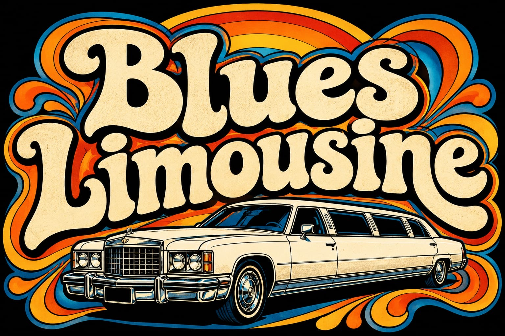

<!doctype html><html lang="es"><head><meta charset="utf-8"><meta name="viewport" content="width=device-width,initial-scale=1,viewport-fit=cover"><meta name="theme-color" content="#101010"><meta name="apple-mobile-web-app-capable" content="yes"><title>Blues Limousine · Cancionero</title><style>
@import url('https://fonts.googleapis.com/css2?family=Shrikhand&family=DM+Sans:wght@400;600;700;800&display=swap');
:root{color-scheme:dark;--bg:#101010;--cream:#f9e5b7;--muted:#b8aa92;--orange:#f5a52c;--blue:#65c2e7;--line:#504638;--sans:'DM Sans',Arial,sans-serif;--display:'Shrikhand',Georgia,serif}*{box-sizing:border-box}html,body{margin:0;background:var(--bg);color:var(--cream);font-family:var(--sans);-webkit-text-size-adjust:100%}button,select,textarea{font:inherit;color:inherit}button,a,select{touch-action:manipulation;-webkit-tap-highlight-color:transparent}a{color:inherit;text-decoration:none}#app{height:100dvh;max-width:440px;margin:auto;display:flex;flex-direction:column;padding:max(8px,env(safe-area-inset-top)) 18px max(8px,env(safe-area-inset-bottom));overflow:hidden}.top{display:flex;justify-content:space-between;align-items:center;min-height:34px;border-bottom:1px solid var(--line);font-size:10px;letter-spacing:.12em;font-weight:700;color:var(--muted);flex-shrink:0}.top a{display:flex;align-items:center;gap:8px;min-height:34px}.chev{display:inline-block;width:8px;height:8px;border-top:1.5px solid currentColor;border-right:1.5px solid currentColor;transform:rotate(45deg);margin-right:3px}.chev.left{transform:rotate(225deg);margin-left:3px;margin-right:0}
.homehero{position:relative;isolation:isolate;overflow:hidden;text-align:center;flex-shrink:0;padding:12px 0 14px}.homehero:before,.homehero:after{content:'';position:absolute;z-index:-1;width:260px;height:160px;border-radius:50%;border:8px solid #217fa5;box-shadow:0 0 0 8px #ed5424,0 0 0 16px #f5a52c;opacity:.65;top:-100px;left:-145px;transform:rotate(-30deg)}.homehero:after{left:auto;right:-145px;transform:rotate(30deg)}.wordmark{font:400 clamp(38px,11.5vw,49px)/.94 var(--display);letter-spacing:-.045em;margin:8px 0 11px;text-shadow:2px 2px #101010,4px 4px #ef5a25,6px 6px #248cb5;transform:rotate(-2deg)}.wordmark span{display:block}.ribbon{height:5px;width:96px;margin:12px auto 8px;border-radius:9px;background:linear-gradient(90deg,#248cb5 0 25%,#f5a52c 25% 50%,#e65024 50% 75%,#f9e5b7 75%)}.subtitle{font-size:10px;letter-spacing:.19em;color:var(--muted);font-weight:700;text-transform:uppercase}.band-logo{width:100%;max-height:145px;object-fit:contain;display:block;margin:auto}.set{flex:1;min-height:0;display:grid;grid-template-rows:repeat(8,minmax(0,1fr));border-top:1px solid var(--line)}.song-link{display:grid;grid-template-columns:26px minmax(0,1fr) 34px 12px;gap:9px;align-items:center;min-height:0;border-bottom:1px solid var(--line)}.num{font-size:11px;font-weight:700;color:var(--blue)}.name{font:400 clamp(17px,5.2vw,22px)/1.04 var(--display);letter-spacing:-.025em}.key{display:grid;place-items:center;border-radius:50%;width:34px;height:34px;background:var(--orange);color:var(--bg);font-size:17px;font-weight:800;letter-spacing:-.05em;flex:none}.menufoot{padding:9px 0 0;display:flex;justify-content:space-between;font-size:9px;letter-spacing:.12em;color:var(--muted)}
.hero{display:grid;grid-template-columns:minmax(0,1fr) 44px;align-items:center;gap:9px;flex-shrink:0;padding:9px 0}.hero .key{width:44px;height:44px;font-size:23px}.brand{color:var(--orange);font-size:9px;letter-spacing:.16em;font-weight:800;text-transform:uppercase}.hero h1{font:400 clamp(23px,7.1vw,32px)/1.08 var(--display);letter-spacing:-.035em;margin:3px 0 0}.tabs{display:grid;grid-template-columns:1fr 1fr;gap:5px;margin:0 0 8px;flex-shrink:0}.tabs a{border:1px solid var(--line);border-radius:5px;display:grid;place-items:center;min-height:36px;font-size:13px;font-weight:700}.tabs a[aria-current=true]{background:var(--cream);color:var(--bg);border-color:var(--cream)}
.structure{flex:1;min-height:0;display:grid;grid-template-rows:repeat(var(--count),minmax(0,1fr));gap:4px}.step{display:flex;flex-direction:column;justify-content:center;align-items:center;text-align:center;gap:1px;min-height:0;padding:2px 3px;border-radius:6px}.step strong{font:800 clamp(20px,6.6vw,29px)/1.04 var(--sans);letter-spacing:-.035em}.step small{font:700 12px/1.12 var(--sans)}.step.boundary{color:var(--muted)}.step.boundary strong{font-size:clamp(17px,5.6vw,23px)}.step.solo{background:#142d39;color:var(--blue);border:1px solid #235064}.step.solo small{color:var(--cream)}.step.mine{background:var(--orange);color:var(--bg);border:1px solid var(--orange)}.step.solo strong,.step.mine strong{font-size:clamp(16px,5.2vw,22px)}.step.recital small{color:var(--blue)}.step .provisional{font-size:10px;color:var(--orange);letter-spacing:.05em}.note{font-size:10px;line-height:1.25;color:var(--muted);padding:5px 0;text-align:center}.edit{display:flex;align-items:center;gap:8px;padding:4px 0 0;font-size:10px;color:var(--muted);flex-shrink:0}.edit select{flex:1;min-width:0;background:#222;border:1px solid var(--line);border-radius:4px;padding:3px 6px;min-height:30px;font-size:12px}
.bottom{display:grid;grid-template-columns:1fr 1fr 1fr;gap:5px;flex-shrink:0;padding-top:8px}.bottom a{display:flex;align-items:center;justify-content:center;gap:5px;min-height:40px;border:1px solid var(--line);border-radius:5px;font-size:11px;font-weight:600}.bottom a[aria-disabled=true]{visibility:hidden;pointer-events:none}.bottom .home{background:var(--cream);color:var(--bg);border-color:var(--cream)}
.lyric-panel{display:flex;flex-direction:column;gap:8px;flex:1;min-height:0}.lyric-tools{display:flex;gap:6px;align-items:center;flex-shrink:0}.lyric-tools button{background:transparent;min-height:36px;border:1px solid var(--line);border-radius:4px;padding:5px 10px;font-size:12px;font-weight:650}.lyric-tools .primary{background:var(--orange);color:var(--bg);border-color:var(--orange)}.lyric-tools .spacer{flex:1}.lyric-scroll{flex:1;min-height:0;overflow-y:auto;overscroll-behavior:contain;white-space:pre-wrap;overflow-wrap:anywhere;font:400 21px/1.48 var(--sans);padding:5px 3px 25px 0}.lyric-panel textarea{flex:1;min-height:0;resize:none;background:#1c1c1c;border:1px solid var(--line);border-radius:4px;padding:10px;font-size:16px;line-height:1.45}.hint{font-size:10px;color:var(--muted)}:focus-visible{outline:2px solid var(--blue);outline-offset:2px}@media(max-height:720px){.homehero{padding:6px 0 9px}.wordmark{font-size:36px}.ribbon{margin:8px auto 5px}.band-logo{max-height:115px}.hero{padding:6px 0}.hero h1{font-size:23px}.top,.top a{min-height:30px}.tabs{margin-bottom:5px}.tabs a{min-height:32px}.structure{gap:2px}.step strong{font-size:22px}.step.boundary strong{font-size:17px}.step.mine strong,.step.solo strong{font-size:17px}.step small{font-size:10px}.bottom a{min-height:36px}.bottom{padding-top:5px}}@media(max-height:510px){#app{height:auto;min-height:100dvh;overflow:visible}.step,.song-link{min-height:42px}.lyric-scroll{max-height:55dvh}.lyric-panel textarea{min-height:180px}}

/* V5: identidad de afiche, sin alterar la partitura visual */
#app{position:relative;isolation:isolate}
#app:before{content:'';position:absolute;inset:0;z-index:-1;pointer-events:none;background-image:repeating-radial-gradient(circle at 20% 30%,#f9e5b705 0px,#f9e5b705 .5px,transparent .8px,transparent 4px);opacity:.40}
.homehero{padding:9px 0 10px;background:radial-gradient(ellipse at 50% 46%,#151410 0%,transparent 72%)}
.homehero:before,.homehero:after{width:230px;height:135px;border:7px solid #248cb5;box-shadow:0 0 0 7px #e65024,0 0 0 14px #f5a52c;opacity:.85;top:-62px;left:-143px;transform:rotate(-31deg);z-index:0}
.homehero:after{left:auto;right:-143px;transform:rotate(31deg)}
.homehero h1{position:relative;z-index:1;margin:0;isolation:auto}
.band-logo{width:92%;max-height:150px;object-fit:contain;mix-blend-mode:screen;display:block;margin:auto;filter:saturate(1.02)}
.homehero h1{mix-blend-mode:screen}
.homehero .ribbon{position:relative;z-index:2;height:4px;width:88px;margin:9px auto 6px}
.homehero .subtitle{position:relative;z-index:2}
.song-link{border-bottom-color:#544635}
.song-link .num{letter-spacing:.045em}
.song-link .key,.hero .key{box-shadow:inset 0 0 0 1px #ffcf77,0 0 0 2px #101010,0 0 0 3px #925d27}
.tabs a{border-radius:20px}
.tabs a[aria-current=true]{box-shadow:inset 0 -2px #e7b66b}
.lyric-scroll{white-space:normal;padding:4px 2px 22px 0}
.lyric-guide{font-size:10px;line-height:1.35;letter-spacing:.035em;color:var(--muted);margin:0 0 7px;padding:0 1px 8px;border-bottom:1px solid var(--line)}
.lyric-block{display:grid;grid-template-columns:38px minmax(0,1fr);gap:9px;align-items:start;margin:0 0 15px;padding:0 0 15px;border-bottom:1px solid #41382b}
.lyric-block:last-child{border-bottom:0;margin-bottom:0}
.lyric-block p{margin:0;white-space:pre-wrap;overflow-wrap:anywhere;line-height:1.48;font-size:inherit}
.part-picker{appearance:none;-webkit-appearance:none;width:38px;min-height:35px;border:1px solid #b67b39;border-radius:7px;background:#292017;color:var(--orange);font:800 15px var(--sans);text-align:center;text-align-last:center;cursor:pointer;padding:3px 0;line-height:1}
.part-picker[data-part^="B"]{border-color:#327792;color:var(--blue);background:#142d39}
.part-picker[data-part^="C"]{border-color:#aa5e39;color:#ffab72;background:#382218}
.part-picker[data-part^="F"]{border-color:#7f7160;color:var(--muted);background:#25221d}
.part-picker[data-part="—"]{border-color:#51483a;color:var(--muted)}
.part-marker{display:flex;flex-direction:column;gap:4px;align-items:center}
.part-marker small{color:var(--muted);font:700 9px/1 var(--sans);text-align:center}
@media(max-height:720px){.homehero{padding:5px 0 8px}.band-logo{max-height:118px}.homehero:before,.homehero:after{top:-78px}.homehero .ribbon{margin:6px auto 4px}}

/* V6 — marco psicodélico y edición protegida */
.top,.bottom,.menufoot{position:relative;isolation:isolate;overflow:hidden;margin-left:-18px;margin-right:-18px;padding-left:18px;padding-right:18px}
.top{min-height:44px;background:#182b31;border-bottom:1px solid #326d83;color:#f9e5b7}
.top:after,.bottom:before,.menufoot:before{content:'';position:absolute;z-index:-1;width:220px;height:105px;right:-100px;top:-92px;border:8px solid #248cb5;box-shadow:0 0 0 7px #e65024,0 0 0 14px #f5a52c,0 0 0 21px #eecf91;border-radius:50%;transform:rotate(-24deg);opacity:.9;pointer-events:none}
.bottom,.menufoot{background:#2b1b13;border-top:1px solid #6d4024;margin-top:5px;padding-top:8px;padding-bottom:5px}
.bottom:before,.menufoot:before{right:auto;left:-110px;top:auto;bottom:-90px;transform:rotate(24deg)}
.bottom a{background:#161616;border-color:#866b48}.bottom .home{background:var(--cream);color:var(--bg)}
.menufoot{align-items:center;min-height:37px;color:var(--cream);font-size:10px}
.homehero .subtitle{font-family:var(--display);font-size:14px;letter-spacing:.035em;text-transform:none;margin:6px 0 0;color:var(--cream)}
.homehero .ribbon{display:none}
.set{grid-template-rows:repeat(var(--song-count),minmax(45px,1fr));overflow-y:auto;overscroll-behavior:contain}
.step.red{background:#4c2017;color:#ffab82;border:1px solid #994832}.step.red small{color:var(--cream)}
.step.blue{background:#142d39;color:#65c2e7;border:1px solid #235064}.step.blue small{color:var(--cream)}
.step.orange{background:var(--orange);color:#101010}.step.gray{color:var(--muted)}
.step.cream{color:var(--cream)}
.step .provisional{color:inherit;opacity:.85}
.structure{grid-template-rows:repeat(var(--count),minmax(37px,1fr));overflow-y:auto;overscroll-behavior:contain}
.lockbtn{font:700 10px var(--sans);letter-spacing:.04em;background:#101010d9;border:1px solid #876943;color:var(--cream);border-radius:20px;padding:7px 10px;min-height:33px}
.part-picker.static{display:grid;place-items:center;cursor:default}
.lyric-block p{margin:0}
.editor-head{display:flex;align-items:center;justify-content:space-between;padding:12px 0 9px;flex-shrink:0;gap:8px}.editor-head h1{font:400 24px/1.1 var(--display);margin:0}.editor-mode{font-size:10px;letter-spacing:.12em;color:var(--orange);font-weight:800}
.editor-scroll{flex:1;min-height:0;overflow-y:auto;overscroll-behavior:contain;padding:2px 1px 18px}
.editor-footer{display:grid;grid-template-columns:1fr 1fr;gap:7px;padding-top:9px;border-top:1px solid var(--line);flex-shrink:0}
.eb{font:700 13px var(--sans);min-height:42px;padding:7px 11px;border:1px solid #69533b;border-radius:7px;background:#211b15;color:var(--cream);cursor:pointer}.eb.primary{background:var(--orange);color:#101010;border-color:var(--orange)}.eb.danger{color:#ff9b87}.eb:disabled{opacity:.32;cursor:default}.eb.sm{font-size:12px;min-height:36px;padding:6px 9px}.eb.full{width:100%;margin:6px 0}
.edcard{border:1px solid #504638;background:#181615;padding:10px;border-radius:9px;margin:7px 0}.edcard .line{display:flex;gap:7px;align-items:center;margin:5px 0}.edcard .line>*{min-width:0}.edcard input,.edcard select,.edcard textarea,.field input,.field textarea{background:#101010;color:var(--cream);border:1px solid #64523e;border-radius:5px;padding:9px;font:400 16px/1.25 var(--sans);width:100%;min-width:0}.edcard textarea,.field textarea{min-height:100px;resize:vertical;line-height:1.4}.edcard .actions{display:flex;gap:5px;flex-wrap:wrap;margin-top:7px}.edcard .actions .eb{flex:1;white-space:nowrap}.edcard .label,.field label{display:block;color:var(--muted);font-size:11px;margin-bottom:4px}.field{margin:8px 0}.edsection{font:400 19px var(--display);margin:15px 0 6px;color:var(--cream)}.edhint{font-size:12px;line-height:1.4;color:var(--muted);margin:7px 0}.edrow{display:grid;grid-template-columns:1fr 105px;gap:7px}.edrow label{min-width:0}.edtabs{display:flex;gap:5px;margin:8px 0}.edtabs button{flex:1}.edtabs button.active{background:var(--cream);color:var(--bg)}.edcheck{display:flex;gap:7px;align-items:center;font-size:12px;color:var(--muted);margin:8px 0}.edcheck input{width:auto;accent-color:var(--orange)}.empty-stage{text-align:center;color:var(--muted);font-size:15px;margin:auto}.stage-locked{font-size:10px;color:var(--muted);text-align:center;margin:3px 0}
@media(max-height:720px){.top{min-height:37px}.menufoot{min-height:33px}.bottom{padding-top:5px}.structure{grid-template-rows:repeat(var(--count),minmax(33px,1fr))}}
</style></head><body><main id="app"></main><script>
const DEFAULTS=[{"id":"song-1","title":"Honest I Do","key":"A","note":"","rows":[{"title":"Intro (A)","detail":"","color":"boundary","reggae":false},{"title":"A","detail":"","color":"cream","reggae":false},{"title":"B","detail":"","color":"cream","reggae":false},{"title":"Solo armónica","detail":"A","color":"solo","reggae":false},{"title":"Solo guitarra","detail":"A","color":"mine","reggae":false},{"title":"B","detail":"","color":"cream","reggae":false},{"title":"Outro (A)","detail":"","color":"boundary","reggae":false}],"blocks":[{"text":"Don't you know that I love you\nHonest I do\nI'll never please\nNo one but you","part":"A","guess":false},{"text":"Please tell me you love me\nStop driving me mad\nYou the sweetest little woman\nThat I ever had","part":"B","guess":false},{"text":"Please, tell me you love me\nStop driving me mad\nWhen I woke up this morning\nNever felt so bad","part":"B","guess":false}]},{"id":"song-2","title":"Hitch Hike","key":"C","note":"","rows":[{"title":"Intro","detail":"","color":"boundary","reggae":false},{"title":"A₁ × 2","detail":"","color":"cream","reggae":false},{"title":"A₂","detail":"","color":"cream","reggae":false},{"title":"Solo guitarra","detail":"B","color":"mine","reggae":false},{"title":"A₁","detail":"","color":"cream","reggae":false},{"title":"A₂ × 3","detail":"","color":"cream","reggae":false}],"blocks":[{"text":"I'm going to Chicago\nThat's the last place my baby strayed\n(Hitch hike) yeah\nHitch hike (hitch hike, baby)\nI'm packing up my bags\nGonna leave this old town right away\n(Hitch hike) hitch hike\n(Hitch hike, baby)\nI've got to find that girl if I have to hitch hike around the world\n(Hitch hike) hitch hike","part":"A₁","guess":false},{"text":"Chicago City Limits\nThat's what the sign on the highway read\n(Hitch hike) hitch hike\n(Hitch hike, baby)\nI'm gonna keep moving till I get to that street corner, 6th and 3rd\n(6th and 3rd)\n(Hitch hike, baby) hitch hike, yeah\nI've got to find that girl if I have to hitch hike around the world\n(Hitch hike) hitch hike, baby","part":"A₁","guess":false},{"text":"Hitch hike (hitch hike)\nNow hitch a hike (hitch hike, children)\nIt's alright (hitch hike)\nHitch hike, children (hitch hike, children)\nHitch hike (hitch hike)\nHitch hike (hitch hike dance)\nHitch hike (hitch hike)\nHitch hike, children","part":"A₂","guess":true},{"text":"Hitch hike, baby\nHitch hike, children\nHitch hike, baby\nHitch hike, children\nHitch hike, baby\nHitch hike, children","part":"A₂","guess":true},{"text":"I'm going to St. Louis\nBut my next stop just might be LA\n(Hitch hike) now what'd I say?\n(LA)\nGot no money in my pocket\nSo I'm gonna have to hitch hike all the way (all the way)\nYeah (hitch hike, baby)\nI've got to find that girl if I have to hitch hike around the world\n(Hitch hike) now what'd I say?","part":"A₁","guess":false},{"text":"Come on, hitch hike (hitch hike, baby)\nCome on, hitch hike, children (hitch hike, children)\nHitch hike (hitch hike, baby)\nNow hitch hike, baby (hitch hike, children)\nHitch hike (hitch hike, baby)\nHitch hike, baby (hitch hike, baby)\nNow hitch hike (hitch hike, baby)\nDo the hitch hike\nCome on, hitch hike (hitch hike, baby)\nNow hitch hike, children (hitch hike, children)\nHitch hike (hitch hike, baby)\nHitch hike (hitch hike, children)\nHitch hike (hitch hike, baby)\nHitch hike (hitch hike, baby)\nHitch hike, children (hitch hike, baby)\nHitch hike (hitch hike, baby)","part":"A₂","guess":false},{"text":"Hitch hike, children","part":"A₂","guess":true}]},{"id":"song-3","title":"I Want to Be Loved","key":"G","note":"","rows":[{"title":"Intro","detail":"","color":"boundary","reggae":false},{"title":"A","detail":"","color":"cream","reggae":false},{"title":"A","detail":"","color":"cream","reggae":false},{"title":"C","detail":"","color":"cream","reggae":false},{"title":"Solo piano","detail":"B × 2","color":"solo","reggae":false},{"title":"Solo guitarra","detail":"B × 2","color":"mine","reggae":false},{"title":"Solo armónica","detail":"B × 2","color":"solo","reggae":false},{"title":"C","detail":"","color":"cream","reggae":false},{"title":"A","detail":"","color":"cream","reggae":false}],"blocks":[{"text":"The spark in your eye sets my, soul on fire,\nyour voice is like a, angel above\nThe touch of your hand woman, drives me insane,\nbut baby, I want's to be loved","part":"A","guess":false},{"text":"I'm crazy 'bout every little, thing you do,\nI even, cherish your hug\nYour kisses so sweet honey they, can't be beat,\nbut baby I want's to be loved","part":"A","guess":false},{"text":"Every time I ask ya, for a date,\nyou don't come at all or your, oh so late\nI ask you to dance a, little spin,\nyou said wait a minute daddy, here come my friend","part":"C","guess":false},{"text":"I love the way you walk when you, pass me by,\neven when you, tryin' to snub\nThe touch of your hand honey, drives me insane,\nbut baby I want's to be loved","part":"A","guess":false}]},{"id":"song-4","title":"Love in Vain","key":"B♭","note":"","rows":[{"title":"Intro","detail":"","color":"boundary","reggae":false},{"title":"A","detail":"","color":"cream","reggae":false},{"title":"A","detail":"","color":"cream","reggae":false},{"title":"Solo armónica","detail":"","color":"solo","reggae":false},{"title":"Solo guitarra — Juan","detail":"","color":"mine","reggae":false},{"title":"A","detail":"","color":"cream","reggae":false},{"title":"Solo guitarra — Mati","detail":"","color":"solo","reggae":false},{"title":"Final","detail":"","color":"boundary","reggae":false}],"blocks":[{"text":"Well I followed her to the station\nWith a suitcase in my hand\nYeah, I followed her to the station\nWith a suitcase in my hand\nWhoa, it's hard to tell, it's hard to tell\nWhen all your love's in vain","part":"A","guess":false},{"text":"When the train come in the station\nI looked her in the eye\nWell the train come in the station\nAnd I looked her in the eye\nWhoa, I felt so sad so lonesome\nThat I could not help but cry","part":"A","guess":false},{"text":"When the train left the station\nIt had two lights on behind\nYeah, when the train left the station\nIt had two lights on behind\nWhoa, the blue light was my baby\nAnd the red light was my mind","part":"A","guess":false},{"text":"All my love was in vain\nAll my love's in vain","part":"Final","guess":false}]},{"id":"song-5","title":"Beast of Burden","key":"E","note":"","rows":[{"title":"Intro","detail":"","color":"boundary","reggae":false},{"title":"A × 2","detail":"","color":"cream","reggae":false},{"title":"B","detail":"","color":"cream","reggae":false},{"title":"A","detail":"","color":"cream","reggae":false},{"title":"B","detail":"","color":"cream","reggae":false},{"title":"C — Voz + guitarra","detail":"Improvisación de Juan sobre la voz","color":"mine","reggae":false},{"title":"A","detail":"","color":"cream","reggae":false},{"title":"Outro","detail":"","color":"boundary","reggae":false}],"blocks":[{"text":"I'll never be your beast of burden\nMy back is broad but it's a hurting\nAll I want is for you to make love to me\nI'll never be your beast of burden\nI've walked for miles my feet are hurting\nAll I want is for you to make love to me","part":"A","guess":false},{"text":"Am I hard enough\nAm I rough enough\nAm I rich enough\nI'm not too blind to see","part":"B","guess":false},{"text":"I'll never be your beast of burden\nSo let's go home and draw the curtains\nMusic on the radio\nCome on baby make sweet love to me","part":"A","guess":false},{"text":"Am I hard enough\nAm I rough enough\nAm I rich enough\nI'm not too blind to see","part":"B","guess":false},{"text":"Oh little sister\nPretty, pretty, pretty, pretty, girl\nYou're a pretty, pretty, pretty, pretty, pretty, pretty girl\nPretty, pretty\nSuch a pretty, pretty, pretty girl\nCome on baby please, please, please","part":"C","guess":false},{"text":"I'll tell ya\nYou can put me out\nOn the street\nPut me out\nWith no shoes on my feet\nBut, put me out, put me out\nPut me out of misery","part":"A","guess":true},{"text":"Yeah, all your sickness\nI can suck it up\nThrow it all at me\nI can shrug it off\nThere's one thing baby\nThat I don't understand\nYou keep on telling me\nI ain't your kind of man","part":"A","guess":true},{"text":"Ain't I rough enough, ooh baby\nAin't I tough enough\nAin't I rich enough, in love enough\nOoh! Ooh! Please","part":"A","guess":true},{"text":"I'll never be your beast of burden\nI'll never be your beast of burden\nNever, never, never, never, never, never, never be","part":"Final","guess":true},{"text":"I don't need no beast of burden\nI need no fussing\nI need no nursing\nNever, never, never, never, never, never, never be","part":"Final","guess":true}]},{"id":"song-6","title":"Time Is on My Side","key":"A","note":"","rows":[{"title":"Intro","detail":"","color":"boundary","reggae":false},{"title":"A × 2","detail":"","color":"cream","reggae":false},{"title":"Solo guitarra y armónica","detail":"A","color":"mine","reggae":false},{"title":"B — Recitado","detail":"Voz + respuesta de guitarra","color":"recital","reggae":false},{"title":"A","detail":"","color":"cream","reggae":false},{"title":"A final","detail":"A recortada","color":"cream","reggae":false}],"blocks":[{"text":"Time is on my side, yes it is\nTime is on my side, yes it is\n\nNow you always say\nThat you want to be free\nBut you'll come running back (said you would baby)\nYou'll come running back (I said so many times before)\nYou'll come running back to me","part":"A","guess":false},{"text":"Oh, time is on my side, yes it is\nTime is on my side, yes it is\n\nYou're searching for good times\nBut just wait and see\nYou'll come running back (I won't have to worry no more)\nYou'll come running back (spend the rest of my life with you, baby)\nYou'll come running back to me","part":"A","guess":false},{"text":"Go ahead, go ahead and light up the town\nAnd baby, do everything your heart desires\nRemember, I'll always be around\nAnd I know, I know\nLike I told you so many times before\nYou're gonna come back, baby\n'Cause I know\nYou're gonna come back knocking\nYeah, knocking right on my door\nYes, yes!","part":"B","guess":false},{"text":"Well, time is on my side, yes it is\nTime is on my side, yes it is\n\n'Cause I got the real love\nThe kind that you need\nYou'll come running back (said you would, baby)\nYou'll come running back (I always said you would)\nYou'll come running back, to me","part":"A","guess":false},{"text":"Yes time, time, time is on my side, yes it is\nTime, time, time is on my side, yes it is\nOh, time, time, time is on my side, yes it is\nI said, time, time, time is on my side, yes it is\nOh, time, time, time is on my side\nYeah, time, time, time is on my side","part":"A final","guess":false}]},{"id":"song-7","title":"Walking the Dog","key":"C","note":"","rows":[{"title":"Nupcial","detail":"","color":"boundary","reggae":false},{"title":"Intro","detail":"","color":"boundary","reggae":false},{"title":"A × 2","detail":"","color":"cream","reggae":false},{"title":"Solo","detail":"A × 2","color":"solo","reggae":false},{"title":"A","detail":"","color":"cream","reggae":false},{"title":"Solo","detail":"A × 1","color":"solo","reggae":false},{"title":"A final × 3","detail":"","color":"cream","reggae":true},{"title":"Nupcial","detail":"","color":"boundary","reggae":false}],"blocks":[{"text":"Baby back\nDressed in black\nSilver buttons all down her back\nHigh hose, tippy toes\nShe broke the needle and she can sew\n\nWalking the dog\nI'm just a walking the dog\nIf you don't know how to do it\nI'll show you how to walk the dog\nC'mon now c'mon","part":"A","guess":false},{"text":"I asked her mother for fifteen cents\nI see you ever jumped the fence\nI jumped so high, touched the skies\nDidn't get back 'til a quarter to five\n\nWalking the dog\nI'm just a walking the dog\nIf you don't know how to do it\nI'll show you how to walk the dog\nC'mon c'mon now","part":"A","guess":false},{"text":"Tell me Mary, what's your twelve\nHow does your garden grow\nWhat with silver bells and cockle shells\nAnd pretty maids all in a row\n\nWalking the dog\nI'm just a walking the dog\nIf you don't know how to do it\nI'll show you how to walk the dog\nC'mon now c'mon","part":"A","guess":false},{"text":"Baby, back\nDressed in black\nSilver buttons all down her back\nHigh hose, tippy toes\nShe broke the needle and she can sew\n\nWalking the dog\nI'm just a walking the dog\nIf you don't know how to do it\nI'll show you how to walk the dog\nC'mon now c'mon","part":"A","guess":true},{"text":"Yeah just a walking\nUh just a walking\nUh just a walking\nNow, if you don't know how to do it\nI'll show you how to walk the dog\nC'mon now c'mon\nIf you don't know how to do it\nI'll show you how to walk the dog\nC'mon now\nIf you don't know how to do it\nI'll show you how to walk the dog","part":"A final","guess":true}]},{"id":"song-8","title":"Black Limousine","key":"G","note":"A: con vuelta Moody · B: 12 compases sin vuelta Moody","rows":[{"title":"Intro","detail":"","color":"boundary","reggae":false},{"title":"A × 2","detail":"","color":"cream","reggae":false},{"title":"Solo armónica","detail":"B","color":"solo","reggae":false},{"title":"A","detail":"","color":"cream","reggae":false},{"title":"Solo Juan y Mati","detail":"B × 4 aprox. · Hasta terminar","color":"mine","reggae":false}],"blocks":[{"text":"We used to ride, baby\nRide around in limousines\nWe looked so fine, baby\nYou in white and me in green\nDrinking and dancing\nAll inside and crazy dream\nWell now look at your face now baby\nLook at you and look at me","part":"A","guess":false},{"text":"I get so scared\nJust to see you on the street\nThey're living dead\nYour all the same, you never speak\nYour wrecked out now\nWashed up high up on the beach\nWell now look at your face now baby\nLook at you and look at me","part":"A","guess":false},{"text":"We used to shine, shine, shine, shine\nSay what a pair, say what a team\nWe used to ride, ride, ride, ride\nIn a long black limousine\nThose dreams are gone baby\nLocked away and never seen\nWell now look at your face now baby\nLook at you and look at me","part":"A","guess":false}]}];

const BASE={date:"05.12.26",songs:DEFAULTS};
const clone=x=>JSON.parse(JSON.stringify(x)),app=document.querySelector("#app"),pad=n=>String(n).padStart(2,"0"),esc=s=>String(s??"").replace(/[&<>"']/g,c=>({"&":"&amp;","<":"&lt;",">":"&gt;",'"':"&quot;","'":"&#39;"}[c]));
const STORE="blues-setlist-v6";let model=clone(BASE),draft=null,scope="home",edId=null,edTab="structure",returnHash="",lyricSize=21,serial=0;
function uid(){return "new-"+Date.now().toString(36)+"-"+(++serial).toString(36)}
function stored(k){try{return localStorage.getItem(k)}catch(e){return null}}
function migrate(){model.songs.forEach((s,i)=>{const l=stored("blues-lyrics-"+i);if(l!==null&&l!==BASE.songs[i].blocks.map(b=>b.text).join("\n\n")){s.blocks=l.trim()?l.trim().split(/\n\s*\n/).map(text=>({text,part:"—",guess:false})):[]}s.blocks.forEach((b,j)=>{const p=stored("blues-part-v1-"+i+"-"+j);if(p!==null){b.part=p;b.guess=false}})});const re=stored("blues-reggae");if(re!==null&&/^-?\d+$/.test(re)){model.songs[6].rows.forEach((x,j)=>x.reggae=j===Number(re))}}
try{const v=stored(STORE);if(v){const parsed=JSON.parse(v);if(valid(parsed))model=parsed;else migrate()}else migrate();const f=+stored("blues-lyric-size");if(f>=15&&f<=35)lyricSize=f}catch(e){migrate()}
function valid(m){return m&&typeof m.date==="string"&&Array.isArray(m.songs)&&new Set(m.songs.map(s=>s.id)).size===m.songs.length&&m.songs.every(s=>typeof s.id==="string"&&typeof s.title==="string"&&typeof s.key==="string"&&Array.isArray(s.rows)&&Array.isArray(s.blocks)&&s.rows.every(r=>typeof r.title==="string"&&typeof r.detail==="string")&&s.blocks.every(b=>typeof b.text==="string"&&typeof b.part==="string"))}
function persist(m){try{localStorage.setItem(STORE,JSON.stringify(m));return true}catch(e){return false}}
const colors=[["cream","Crema · parte"],["mine","Naranja · guitarra"],["solo","Azul · solo"],["boundary","Gris · inicio/final"],["red","Terracota"],["recital","Crema + detalle azul"]];
function colorClass(c){return colors.some(x=>x[0]===c)?c:"cream"}
function locate(){const [h,mode]=location.hash.slice(1).split("/");let i=model.songs.findIndex(s=>s.id===h);if(i<0&&/^\d+$/.test(h))i=Number(h)-1;return {i:i>=0&&i<model.songs.length?i:-1,lyrics:mode==="letra"}}
const link=(s,lyrics=false)=>"#"+s.id+(lyrics?"/letra":"");
function displayDate(value){return String(value).replace(/^(\d{2})[/.](\d{2})[/.](?:20)?(\d{2})$/,"$1.$2.$3")}
function top(left,right){return '<header class="top">'+left+right+'</header>'}
function step(r){return '<div class="step '+colorClass(r.color)+'"><strong>'+esc(r.title)+'</strong>'+(r.detail?'<small>'+esc(r.detail)+'</small>':'')+(r.reggae?'<small class="provisional">REGGAE · PROVISORIO</small>':'')+'</div>'}
function renderLyric(s){return s.blocks.length?'<div class="lyric-guide">Referencias del arreglo · modo lectura</div>'+s.blocks.map(b=>'<section class="lyric-block"><div class="part-marker"><span class="part-picker static" data-part="'+esc(b.part)+'">'+esc(b.part==="A final"?"A f.":b.part==="Final"?"Fin":b.part||"—")+'</span>'+(b.guess?'<small>REVISAR</small>':'')+'</div><p>'+esc(b.text)+'</p></section>').join(""):'<div class="empty-stage">Todavía no hay letra. Podés agregarla desde Editar.</div>'}
function render(){if(draft){renderEditor();return}const {i,lyrics}=locate(),n=model.songs.length;if(i<0){app.innerHTML=top('<span>BLUES LIMOUSINE</span>','<span>SETLIST · '+pad(n)+'</span>')+'<section class="homehero"><h1 style="margin:0"></h1><div class="subtitle">Setlist · '+esc(displayDate(model.date))+'</div></section><nav class="set" style="--song-count:'+Math.max(1,n)+'" aria-label="Canciones">'+model.songs.map((s,j)=>'<a class="song-link" href="'+link(s)+'"><span class="num">'+pad(j+1)+'</span><span class="name">'+esc(s.title)+'</span><span class="key" aria-label="Tonalidad '+esc(s.key)+'">'+esc(s.key||"—")+'</span><span class="chev" aria-hidden="true"></span></a>').join("")+'</nav><footer class="menufoot"><span>MODO ESCENARIO · V6.1</span><button class="lockbtn" id="edit-set">Editar cancionero</button></footer>';document.querySelector("#edit-set").onclick=()=>begin("home");return}
const s=model.songs[i],prev=model.songs[i-1],next=model.songs[i+1];let middle=lyrics?'<section class="lyric-panel"><div class="lyric-tools"><span class="spacer"></span><button id="smaller" aria-label="Reducir tamaño">A−</button><button id="larger" aria-label="Aumentar tamaño">A+</button></div><article class="lyric-scroll" id="lyric-text" style="font-size:'+lyricSize+'px">'+renderLyric(s)+'</article></section>':'<section class="structure" style="--count:'+Math.max(1,s.rows.length)+'" aria-label="Estructura">'+(s.rows.length?s.rows.map(step).join(""):'<div class="empty-stage">Sin estructura. Agregá partes desde Editar.</div>')+'</section>'+(s.note?'<div class="note">'+esc(s.note)+'</div>':'');
app.innerHTML=top('<a href="#" aria-label="Volver al cancionero"><span class="chev left" aria-hidden="true"></span>CANCIONERO</a>','<span>'+pad(i+1)+' / '+pad(n)+'</span><button id="edit-song" class="lockbtn">Editar</button>')+'<section class="hero"><div><div class="brand">Blues Limousine</div><h1>'+esc(s.title)+'</h1></div><div class="key" aria-label="Tonalidad '+esc(s.key)+'">'+esc(s.key||"—")+'</div></section><nav class="tabs" aria-label="Vista de canción"><a href="'+link(s)+'" aria-current="'+!lyrics+'">Estructura</a><a href="'+link(s,true)+'" aria-current="'+lyrics+'">Letra</a></nav>'+middle+'<nav class="bottom" aria-label="Navegación"><a href="'+(prev?link(prev,lyrics):"#")+'" '+(!prev?'aria-disabled="true" tabindex="-1"':"")+'><span class="chev left" aria-hidden="true"></span>Anterior</a><a class="home" href="#">Menú</a><a href="'+(next?link(next,lyrics):"#")+'" '+(!next?'aria-disabled="true" tabindex="-1"':"")+'>Siguiente<span class="chev" aria-hidden="true"></span></a></nav>';
document.querySelector("#edit-song").onclick=()=>begin("song",s.id,lyrics?"lyrics":"structure");
for(const [id,d] of [["smaller",-2],["larger",2]]){const el=document.getElementById(id);if(el)el.onclick=()=>{lyricSize=Math.max(15,Math.min(35,lyricSize+d));document.querySelector("#lyric-text").style.fontSize=lyricSize+"px";try{localStorage.setItem("blues-lyric-size",String(lyricSize))}catch(e){}}}
}
function begin(type,id=null,tab="structure"){draft=clone(model);scope=type;edId=id;edTab=tab;returnHash=location.hash;renderEditor()}
function editSong(){return draft.songs.find(s=>s.id===edId)}
function btn(label,action,extra="",disabled=false){return '<button type="button" class="eb sm '+extra+'" data-action="'+action+'" '+(disabled?"disabled":"")+'>'+label+'</button>'}
function input(value,field,placeholder=""){return '<input value="'+esc(value)+'" data-field="'+field+'" placeholder="'+esc(placeholder)+'" aria-label="'+esc(placeholder||field)+'">'}
function textarea(value,field,placeholder=""){return '<textarea data-field="'+field+'" placeholder="'+esc(placeholder)+'" aria-label="'+esc(placeholder||field)+'">'+esc(value)+'</textarea>'}
function reorder(a,j,d){if(j+d<0||j+d>=a.length)return;[a[j],a[j+d]]=[a[j+d],a[j]]}
function scrollRender(){const y=document.querySelector(".editor-scroll")?.scrollTop||0;renderEditor();document.querySelector(".editor-scroll").scrollTop=y}
function renderEditor(){const s=editSong(),home=scope==="home";let content="";
if(home){content='<div class="field"><label>Fecha del setlist</label>'+input(draft.date,"date","DD.MM.AA")+'</div><div class="edsection">Repertorio</div><p class="edhint">Podés cambiar el orden, duplicar o agregar canciones. Nada se aplica hasta guardar.</p>'+draft.songs.map((x,j)=>'<div class="edcard" data-j="'+j+'"><div class="edrow"><label><span class="label">Canción '+pad(j+1)+'</span>'+input(x.title,"title","Título")+'</label><label><span class="label">Tonalidad</span>'+input(x.key,"key","Ej. Bb")+'</label></div><div class="actions">'+btn("↑","up","",j===0)+btn("↓","down","",j===draft.songs.length-1)+btn("Abrir","open")+btn("Duplicar","duplicate")+btn("Borrar","remove","danger")+'</div></div>').join("")+'<button class="eb full primary" data-action="add-song">+ Agregar canción</button><div class="edsection">Copia de seguridad</div><div class="actions">'+btn("Exportar JSON","export")+btn("Importar JSON","import")+'</div><p class="edhint">Guardá una copia para llevar tus cambios a otro dispositivo. Importar reemplaza el borrador, no el original publicado.</p>'+btn("Restaurar cancionero original","restore-all","danger");
}else if(s){content='<div class="edrow field"><label>Título'+input(s.title,"song-title","Título")+'</label><label>Tonalidad'+input(s.key,"song-key","Ej. G")+'</label></div><div class="edtabs">'+btn("Estructura","tab-structure",edTab==="structure"?"active":"")+btn("Letra","tab-lyrics",edTab==="lyrics"?"active":"")+'</div>';
if(edTab==="structure"){content+='<p class="edhint">Cada aparición es independiente: podés repetir A, crear D o cualquier texto y darle un color distinto.</p>'+s.rows.map((x,j)=>'<div class="edcard" data-j="'+j+'"><span class="label">Parte '+pad(j+1)+'</span>'+input(x.title,"row-title","Ej. A, D, Solo guitarra")+'<div class="line">'+input(x.detail,"row-detail","Detalle opcional · Ej. ×2")+'</div><label class="label">Color</label><select data-field="row-color" aria-label="Color">'+colors.map(([v,t])=>'<option value="'+v+'" '+(colorClass(x.color)===v?"selected":"")+'>'+t+'</option>').join("")+'</select><label class="edcheck"><input type="checkbox" data-field="row-reggae" '+(x.reggae?"checked":"")+'> Reggae · provisorio</label><div class="actions">'+btn("↑","up","",j===0)+btn("↓","down","",j===s.rows.length-1)+btn("Duplicar","duplicate")+btn("Borrar","remove","danger")+'</div></div>').join("")+'<button class="eb full primary" data-action="add-row">+ Agregar parte</button><div class="field"><label>Nota de la estructura</label>'+textarea(s.note,"song-note","Nota opcional")+'</div>'+btn("Restaurar estructura original","restore-rows","danger",!BASE.songs.some(x=>x.id===s.id))
}else{content+='<p class="edhint">Editá las estrofas y su referencia musical sin alterar la estructura. Podés agregar A, D, etc.</p>'+s.blocks.map((b,j)=>'<div class="edcard" data-j="'+j+'"><div class="edrow"><label><span class="label">Estrofa '+pad(j+1)+'</span></label><label><span class="label">Parte</span>'+input(b.part,"block-part","A / B / C")+'</label></div>'+textarea(b.text,"block-text","Texto de la estrofa")+'<label class="edcheck"><input type="checkbox" data-field="block-guess" '+(b.guess?"checked":"")+'> Asociación por revisar</label><div class="actions">'+btn("↑","up","",j===0)+btn("↓","down","",j===s.blocks.length-1)+btn("Duplicar","duplicate")+btn("Borrar","remove","danger")+'</div></div>').join("")+'<button class="eb full primary" data-action="add-block">+ Agregar estrofa</button>'+btn("Restaurar letra original","restore-blocks","danger",!BASE.songs.some(x=>x.id===s.id))}}
app.innerHTML=top('<span>MODO EDICIÓN</span>','<span>CAMBIOS SIN GUARDAR</span>')+'<div class="editor-head"><div><div class="editor-mode">BLUES LIMOUSINE</div><h1>'+(home?"Editar cancionero":"Editar canción")+'</h1></div>'+(!home?btn("Repertorio","back-set"):"")+'</div><div class="editor-scroll">'+content+'</div><footer class="editor-footer"><button class="eb" data-action="cancel">Cancelar</button><button class="eb primary" data-action="save">Guardar y salir</button></footer>';
}
app.addEventListener("input",e=>{if(!draft)return;const el=e.target,f=el.dataset.field;if(!f)return;const j=Number(el.closest("[data-j]")?.dataset.j),s=editSong(),v=el.type==="checkbox"?el.checked:el.value;if(f==="date")draft.date=v;else if(scope==="home"&&draft.songs[j])draft.songs[j][f]=v;else if(s){if(f.startsWith("song-"))s[f.slice(5)]=v;else if(f.startsWith("row-")&&s.rows[j])s.rows[j][f.slice(4)]=v;else if(f.startsWith("block-")&&s.blocks[j]){s.blocks[j][f.slice(6)]=v;if(f==="block-part")s.blocks[j].guess=false}}});
app.addEventListener("click",e=>{const target=e.target.closest("[data-action]");if(!draft||!target)return;const a=target.dataset.action,j=Number(target.closest("[data-j]")?.dataset.j),s=editSong(),arr=scope==="home"?draft.songs:edTab==="structure"?s?.rows:s?.blocks;
if(a==="save"){if(draft.songs.some(x=>!x.title.trim()||x.rows.some(r=>!r.title.trim()))){alert("Completá los títulos de las canciones y las partes antes de guardar.");return}if(!persist(draft)){alert("No se pudo guardar en este navegador. Exportá una copia antes de salir.");return}model=draft;draft=null;const exists=model.songs.some(x=>x.id===edId);if(returnHash&& !exists&&scope==="song")location.hash="";else if(scope==="song"&&exists)location.hash=link(model.songs.find(x=>x.id===edId),edTab==="lyrics");render();return}
if(a==="cancel"){if(JSON.stringify(draft)!==JSON.stringify(model)&&!confirm("¿Descartar los cambios sin guardar?"))return;draft=null;render();return}
if(a==="tab-structure"||a==="tab-lyrics"){edTab=a==="tab-structure"?"structure":"lyrics";renderEditor();return}
if(a==="back-set"){scope="home";edId=null;renderEditor();return}
if(a==="open"){scope="song";edId=draft.songs[j].id;edTab="structure";renderEditor();return}
if(a==="up")reorder(arr,j,-1);else if(a==="down")reorder(arr,j,1);else if(a==="duplicate"){const item=clone(arr[j]);if(scope==="home"){item.id=uid();item.title+=" (copia)"}arr.splice(j+1,0,item)}else if(a==="remove"){if(confirm(scope==="home"?"¿Quitar esta canción del borrador?":"¿Quitar este bloque del borrador?"))arr.splice(j,1);else return}else if(a==="add-song"){const x={id:uid(),title:"Nueva canción",key:"",note:"",rows:[],blocks:[]};draft.songs.push(x);scope="song";edId=x.id;edTab="structure";renderEditor();return}else if(a==="add-row"){s.rows.push({title:"D",detail:"",color:"cream",reggae:false})}else if(a==="add-block"){s.blocks.push({part:"—",text:"",guess:false})}else if(a==="restore-all"){if(confirm("¿Restaurar las ocho canciones y la fecha originales en el borrador?"))draft=clone(BASE);else return}else if(a==="restore-rows"||a==="restore-blocks"){const base=BASE.songs.find(x=>x.id===s.id);if(base&&confirm("¿Restaurar esta sección en el borrador?")){if(a==="restore-rows"){s.rows=clone(base.rows);s.note=base.note}else s.blocks=clone(base.blocks)}else return}else if(a==="export"){const blob=new Blob([JSON.stringify(draft,null,2)],{type:"application/json"}),url=URL.createObjectURL(blob),anchor=document.createElement("a");anchor.href=url;anchor.download="blues-limousine-setlist.json";anchor.click();setTimeout(()=>URL.revokeObjectURL(url),3000);return}else if(a==="import"){const f=document.createElement("input");f.type="file";f.accept=".json,application/json";f.onchange=async()=>{try{const x=JSON.parse(await f.files[0].text());if(!valid(x))throw Error();if(confirm("¿Reemplazar el borrador con esta copia?")){draft=x;renderEditor()}}catch(e){alert("Archivo de cancionero no válido.")}};f.click();return}
scrollRender();
});
window.addEventListener("hashchange",()=>{if(draft){if(JSON.stringify(draft)!==JSON.stringify(model)&&!confirm("¿Salir del editor sin guardar?")){history.replaceState(null,"",returnHash||location.pathname+location.search);return}draft=null}render()});
window.addEventListener("beforeunload",e=>{if(draft&&JSON.stringify(draft)!==JSON.stringify(model)){e.preventDefault();e.returnValue=""}});
render();
</script></body></html>